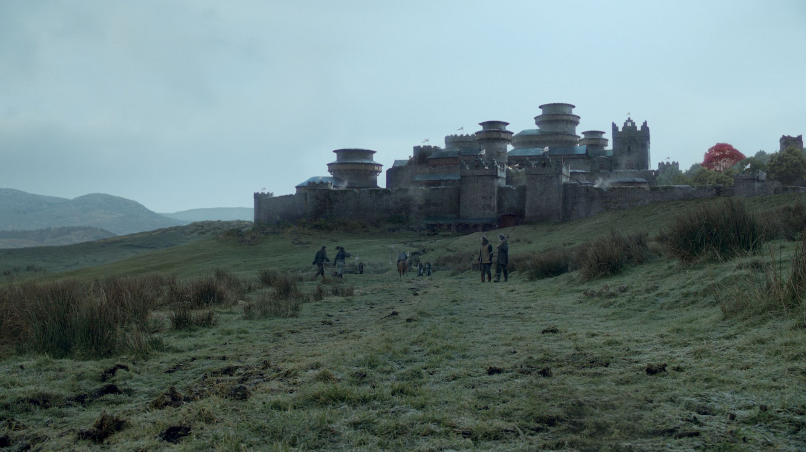
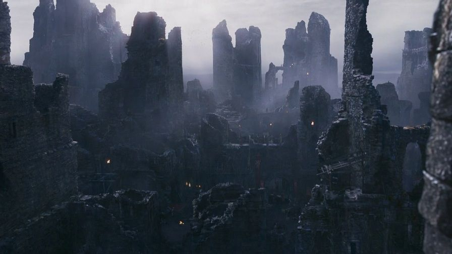
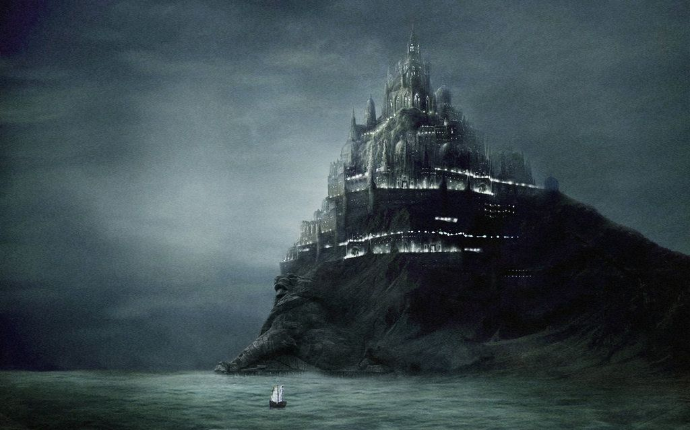
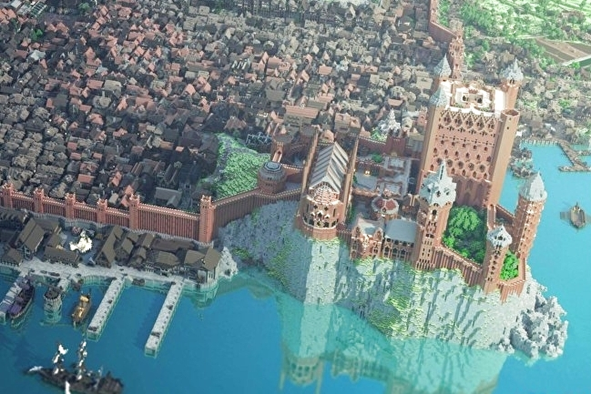
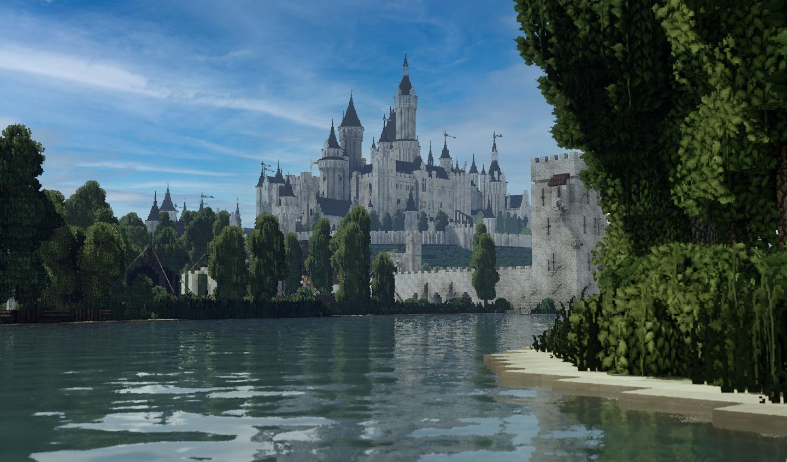
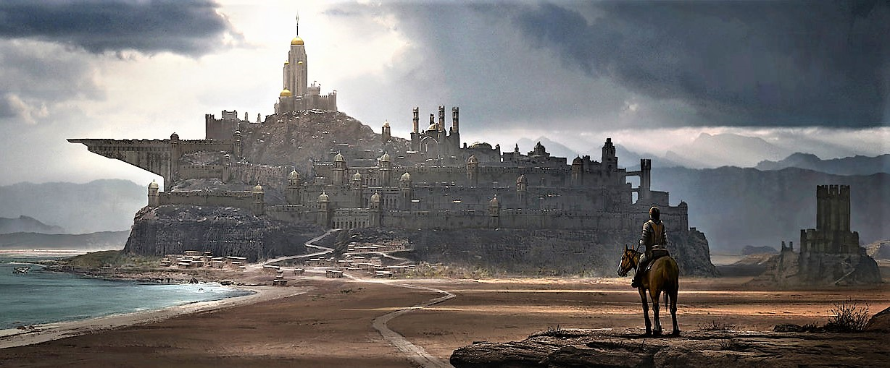

Westeros is a continent located in the far west of the known world. It is separated from the continent of Essos by a strip of water known as the Narrow Sea.
The continent is home to two sovereign states: the Kingdom of the North, which regained independence following the civil war in 305 AC, and the Six Kingdoms, which covers the southern half of the continent, holds fealty to the King of the Andals and the First Men, who ancestrally sat on the Iron Throne in the city of King's Landing before its destruction. The terms "Seven Kingdoms" and "Westeros" were normally used interchangeably before the northern seccession.
People or things from Westeros are referred to as "Westerosi".
Places to Visit
From The wall to the sea, visit every kingdomes in here

Winterfell
Vale

Harrenhal

Casterly Rock

King's Landing

Storm's End

Highgarden
